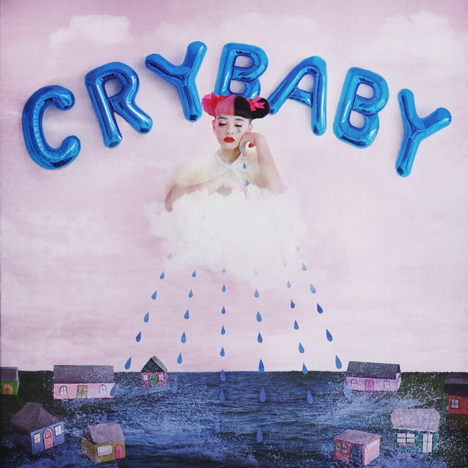
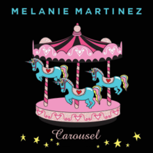

Melanie Martinez
É uma cantora e compositora norte-americana, famosa por seu estilo excêntrico, com cabelo colorido, roupas extravagantes e também por suas músicas com letras fortes e marcantes.

O album- Cry Baby
Cry Baby é o primeiro album de Melanie Martinez, trata-se de um álbum conceitual, portanto possui uma história contada, cuja protagonista, Cry Baby, é uma criança que cresceu num lar despropício e passou e foi superando vários traumas.

Carousel- o single
Carousel é um single, que representa a Cry Baby, adolescente, passando por mais um trauma: um amor indeciso. Como diz a música, é como um carrosel, vai e vem e isso acarreta em mais uma decepção para a Cry Baby, por um garoto que não sabe o que quer.